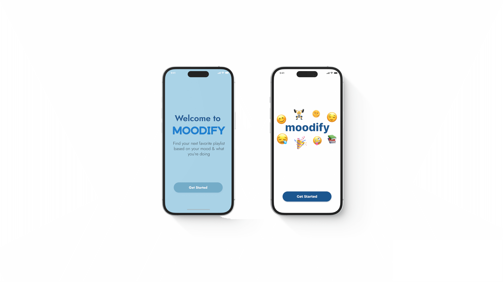
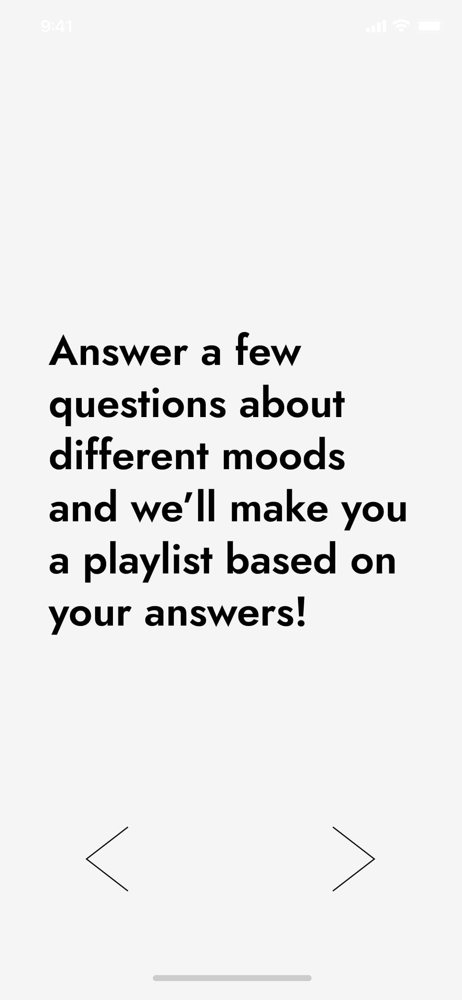
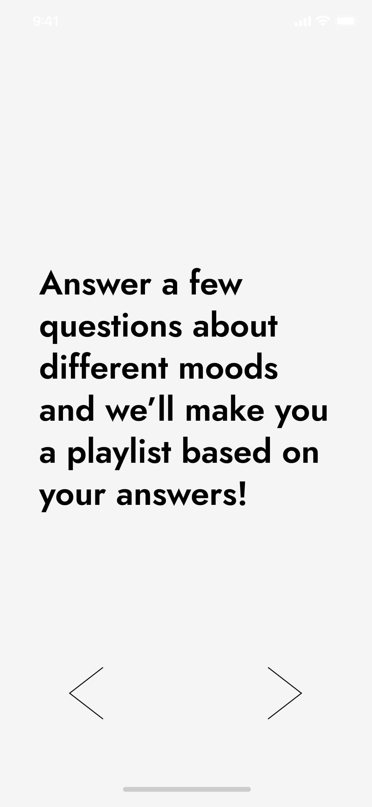

moodify
this was a product created through the measure of music conference, and my first time being the lead ui/ux designer!
note:this case study is divided into 2 parts: the initial concept design i made for the conference, and a redesign project that i created!
introduction
moodify, an app designed to transform the way you experience music by creating custom playlists that match your mood, activity, and personal tastes. leveraging data from streaming platforms, moodify tailors playlists to seamlessly fit any situation - whether you're working out, relaxing, or exploring new genres. this was created for the measure of music conference
our team
- ashley sanon
- dayoung lee
- van nguyen
- rayn adams
tools used
- figma
- chartmetric
- python
[01] initial concept & design process
our mission was to develop a prototype by leveraging data to understand the algorithm between certain songs and various moods or activities, all while allowing users to receive a playlist. however, there were a couple challenges that we ran into...
mood subjectivity
- moods are interpreted differently whereas one song can evoke different moods/feelings in multiple subjects
data quality
- more users are needed to have a better end result
limited catalog
- if the app's library is limited, users may receive repetitive or irrelevant recommendations
process
with such little time to prepare this product, i went straight into the process of designing and prototyping the product. i decided to go with a simple, to-the-point decision where users would be able to understand the flow of the product. this was the ultimate product that we presented.
 



this was my initial design that i had started with. i decided to go with a simple, to-the-point decision where users would be able to understand the flow of the product.because of the limited time, there was no time to create a more complex design, so this is the design that i had ultimately come up with. as someone who had just started to understand prototyping and designing, it was definitely a challenge to design something so quickly. ultimately, i ended up designing something very simple so that users were able to understand how easy it was to go through the process.
takeaways
we had two days to create an idea to pitch and compose a presentation displaying what data we used and how we used that data. being my first time participating in this conference, it felt daunting because i was not confident in creating a product that implemented all sorts of different data. this was also a project where it was my first time using figma to create a prototype, so it was definitely a challenge for me. but, i enjoyed working with my team, and hopefully this can be something that can be developed into something more!
click here to see the presentation and demo!